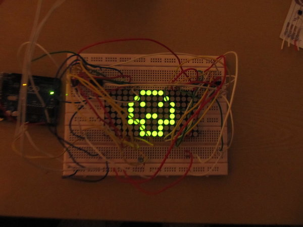

Electronics freak, hardware tinkerer, movie buff, android lover and blogger
smarT - An intelligent connected t-shirt
As a part of MIT Media Labs - Apeejay Design and Innovation workshop held in 2012, we conceptualized a smart, connected tshirt called 'smarT'. Thr initial prototye was made using an Arduino Uno and LED matrix
smarT is an interactive people mainly developed for specially abled people. This tshirt has a LED panel in front displaying text information. The final work is to read gestures via a head/shoulder mounted camera and display it on the tshirt. The tshirt will be connected to internet and can display your twitter status or weather information.
One of the other goals of this work is to try to come up with a flexible display which can be stuck anywhere from clothers to bags to furniture.
Technology: Arduino, LED panels, basic electronics. Also focused on circuit design, arduino programming, brainstorming and rapid prototyping.
